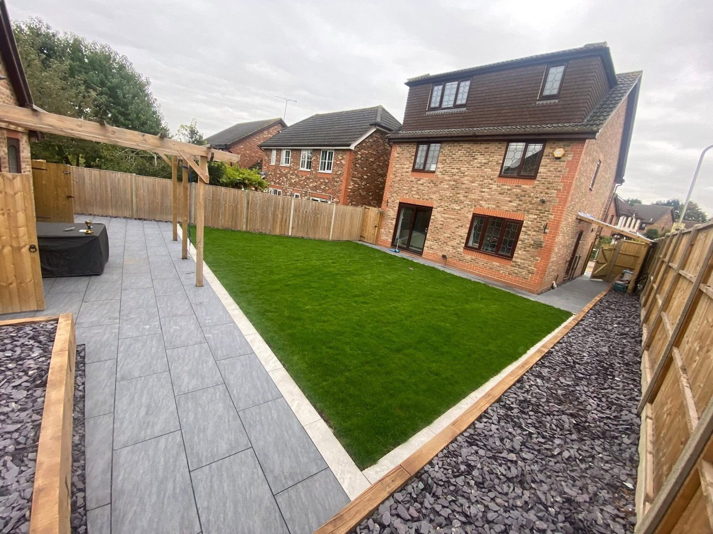
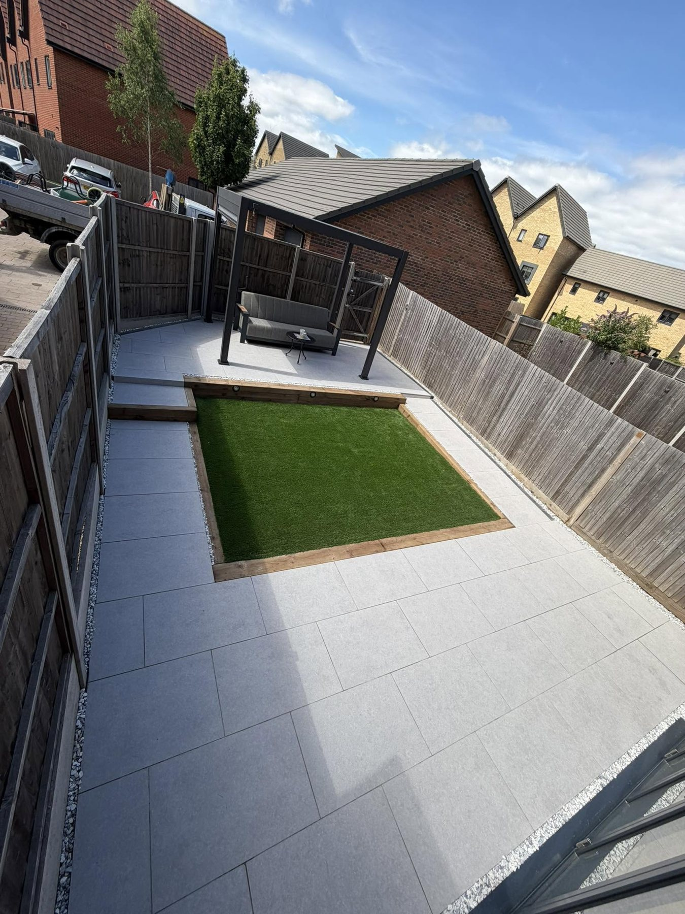
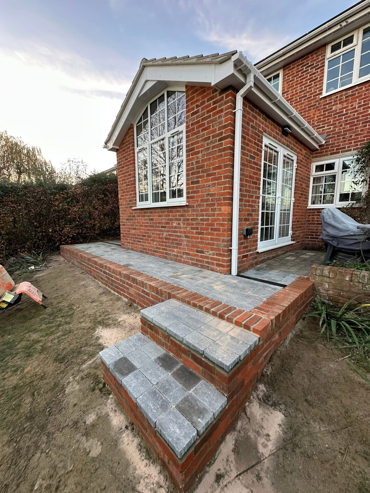
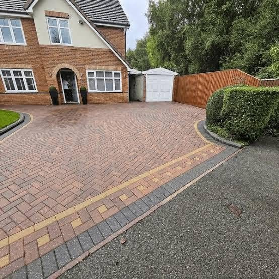
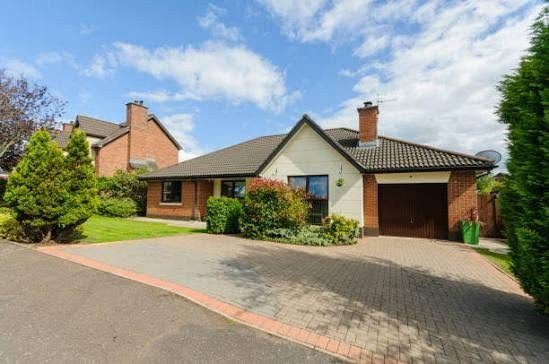
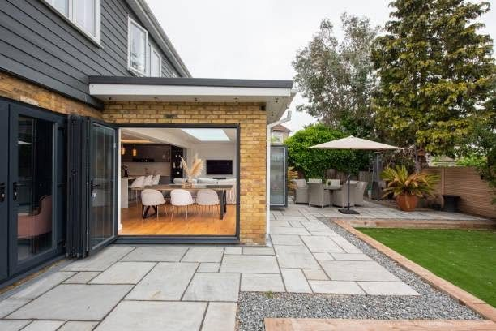
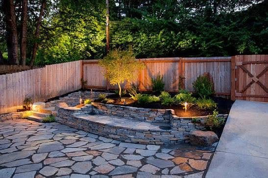
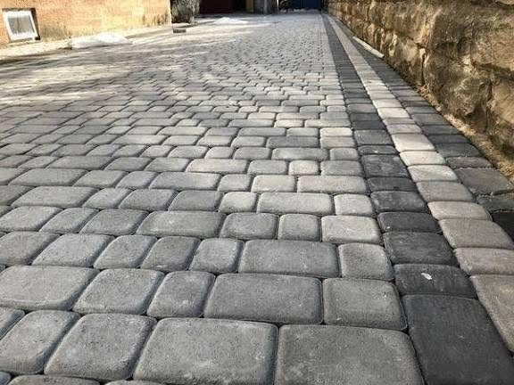
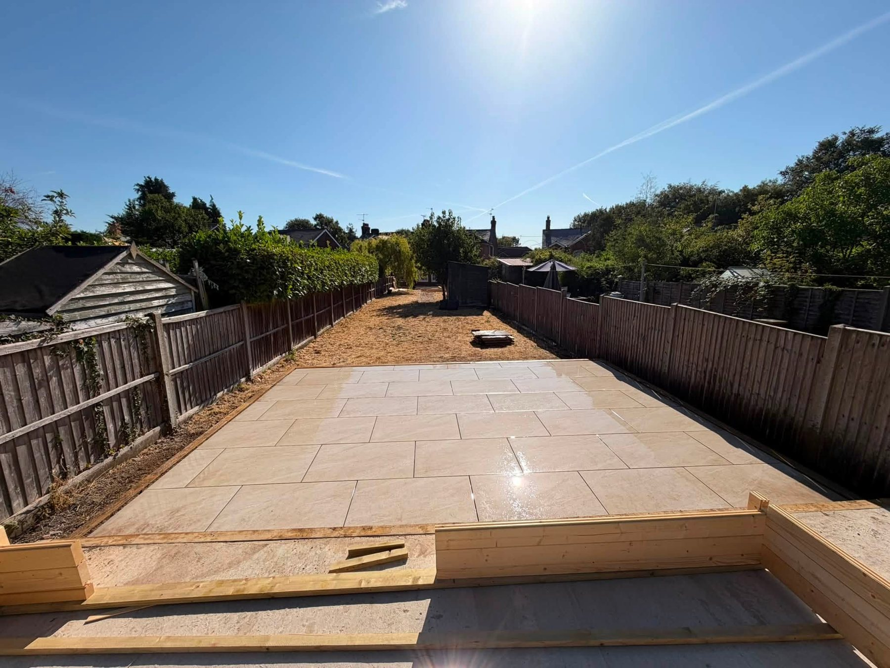

DrivewaysResin, tarmac and block paving options

AJR LANDSCAPES · BERKSHIRE · HAMPSHIRE · SURREY
Quality craft. Outdoor spaces built to last.
Driveways, patios, paving and complete garden transformations, shaped around your property and finished with care.
DrivewaysPatiosFencingGarden renovations
Patios & PavingNatural stone and porcelain finishes
Fencing & BrickworkDefined boundaries and built features
Garden RenovationsLawns, turf, drainage and clearance
THE WHOLE OUTSIDE SPACE
Strong foundations. Clean finishing.
The supplied AJR portfolio shows complete gardens, new lawns and paving, along with driveways and carefully laid steps. Each project starts with how the outdoor area needs to work.
Discuss your project →

DRIVEWAYS & ENTRANCES
Make the approach count.
From patterned block paving to larger driveways, AJR's project photos show practical entrances with defined edges and a strong finish.
View the projects →

PROJECT GALLERY
Real projects by AJR Landscapes.
Driveways, paving and garden spaces from the supplied portfolio.




READING · SOUTHERN COUNTIES
Bring the space together.
AJR Landscapes is based in Reading and says it covers Berkshire, Hampshire, Surrey and surrounding areas. The business advertises driveways, patios, drop kerbs, fencing, brickwork, drainage, garden renovations, artificial lawn and turf, and garden clearance.
01
Driveways & drop kerbs
Ask about the right surface and access for your property.
02
Patios & gardens
Connect paved living areas with the rest of the landscape.
03
Clearance & preparation
Discuss groundwork and the changes needed before the final finish.
REQUEST A QUOTE
Tell AJR about your outdoor project.
Complete the form and WhatsApp will open with your details ready to send. This is a quote request, not a confirmed booking.
AJR LANDSCAPES
Ready to transform the outside?
Berkshire · Hampshire · Surrey · info@ajrlandscaping.co.uk